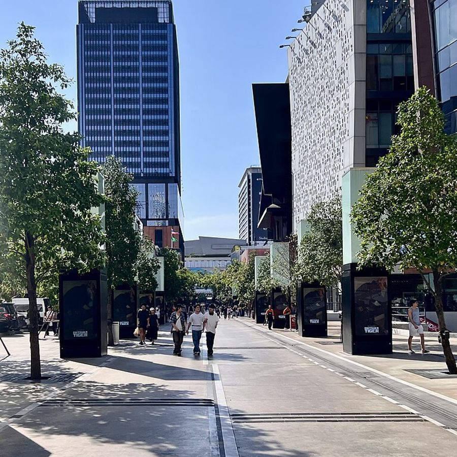

ติว A-Level คณิตศาสตร์ 1 และฟิสิกส์ ตัวต่อตัวหรือกลุ่มเล็ก ที่สยามสแควร์ หรือออนไลน์ เริ่มจากจุดที่น้องยังไม่เข้าใจ ไม่ใช่จากหน้าแรกของหนังสือ
แนวข้อสอบ A-Level คณิต 1 ข้อที่คนพลาดบ่อยที่สุดข้อหนึ่ง เลือกคำตอบแล้วดูวิธีคิดของพี่ภูมิ
ถ้า log2x + log2(x − 2) = 3 แล้ว x มีค่าเท่าใด
ราคาต่อชั่วโมง เลือกเวลาเรียนเองได้ ไม่ต้องจ่ายล่วงหน้าทั้งคอร์ส
ปูพื้นหรือทำโจทย์ตามจุดอ่อน เหมาะกับ ม.5–ม.6
กลศาสตร์ ไฟฟ้า คลื่น เน้นเข้าใจภาพก่อนใช้สูตร
ชวนเพื่อนมาเรียนด้วยกัน เนื้อหาตามที่กลุ่มเลือก
ตัวต่อตัว ใช้ได้ทั้งคณิตและฟิสิกส์ ภายใน 3 เดือน
TCAS 2569
ตัวอย่างในเว็บสาธิต ชื่อและคะแนนสมมติ

ทัน ครั้งแรกพี่จะดูว่าน้องติดตรงไหนก่อน แล้วเริ่มจากตรงนั้น ส่วนใหญ่ปูพื้นใหม่ใช้ 6–10 ชั่วโมง
ได้ แจ้งทางไลน์ล่วงหน้าอย่างน้อย 12 ชั่วโมง ไม่เสียชั่วโมงเรียน
หลังเรียนทุกครั้ง พี่จะสรุปสั้น ๆ ทางไลน์ ว่าเรียนอะไรไป และน้องควรฝึกอะไรต่อ
มีชีทสรุปและแบบฝึกหัดทุกบท เป็นไฟล์ PDF ส่งให้ทางไลน์